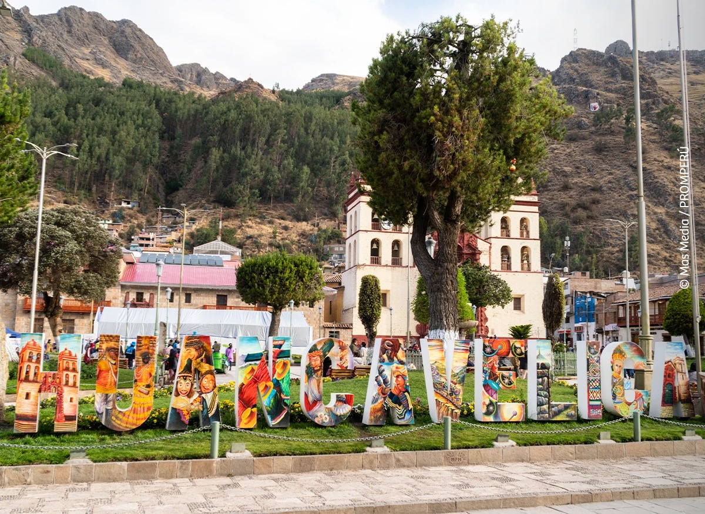

Mi Historia
Conoce a Fernando
Un huancavelicano auténtico, comprometido con el desarrollo y bienestar de nuestra querida provincia.

Un huancavelicano auténtico, comprometido con el desarrollo y bienestar de nuestra querida provincia.
Hermanas y hermanos huancavelicanos, jóvenes estudiantes; les saluda Fernando Clemente Arana, candidato a la alcaldía provincial de Huancavelica por el partido político Acción Popular.
Como hijo de auténticos huancavelicanos, mis estudios los realicé en la I.E. N.° 36011 del barrio de San Cristóbal, Colegio Ramón Castilla Marquesado, ex Comercio N.° 76.
Mis estudios superiores los cursé en el Instituto Superior Tecnológico Público de Huancavelica en la especialidad de Contabilidad y en la Primera Casa Superior de Estudios de Huancavelica en la Facultad de Ciencias Empresariales, Escuela Académico Profesional de Contabilidad.
Actualmente me desempeño como Contador Público Colegiado Certificado, con experiencia en gestión pública y privada; asimismo soy miembro del Consejo Directivo del Colegio de Contadores Públicos de Huancavelica; por tal razón me considero un verdadero y auténtico huancavelicano.

"Un verdadero y auténtico huancavelicano"
Una trayectoria forjada con esfuerzo, honestidad y compromiso con Huancavelica
Contador Público Colegiado Certificado, con estudios en el Instituto Superior Tecnológico y la Universidad Nacional de Huancavelica.
Amplia experiencia en gestión pública y privada, desempeñándose con eficiencia y transparencia en cada responsabilidad.
Miembro del Consejo Directivo del Colegio de Contadores Públicos de Huancavelica, aportando al desarrollo profesional de la región.
Mi compromiso con Huancavelica nace desde mi infancia, forjado en las aulas de nuestra tierra y fortalecido con cada paso de mi formación profesional.
Soy un profesional que cree en el trabajo honesto, la transparencia y el desarrollo integral de nuestra provincia.
Únete a miles de huancavelicanos que ya están construyendo el futuro de la provincia. Tu voz, tu energía y tu compromiso son fundamentales para transformar Huancavelica.